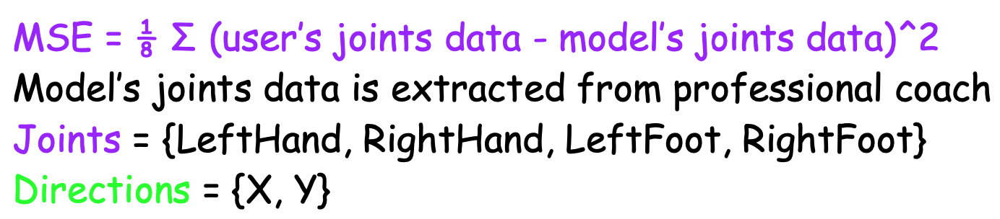
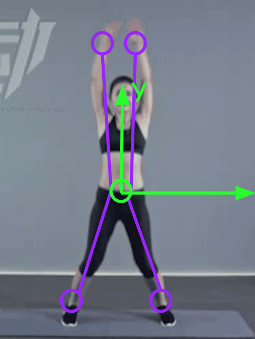

ARCoach gives the users feedback about the exercise through hints and a performance score. The judgment of the performance score should be related to the professional coaches’ corresponding exercise. ARCoach borrows the idea from MSE (mean square error).
Take jumping jacks as an example. ARCoach judges the performance by MSE value, more close MSE is to 0, more accurate the exercise.
 MSE
 Quantification of Performance
Read next: Calendar.